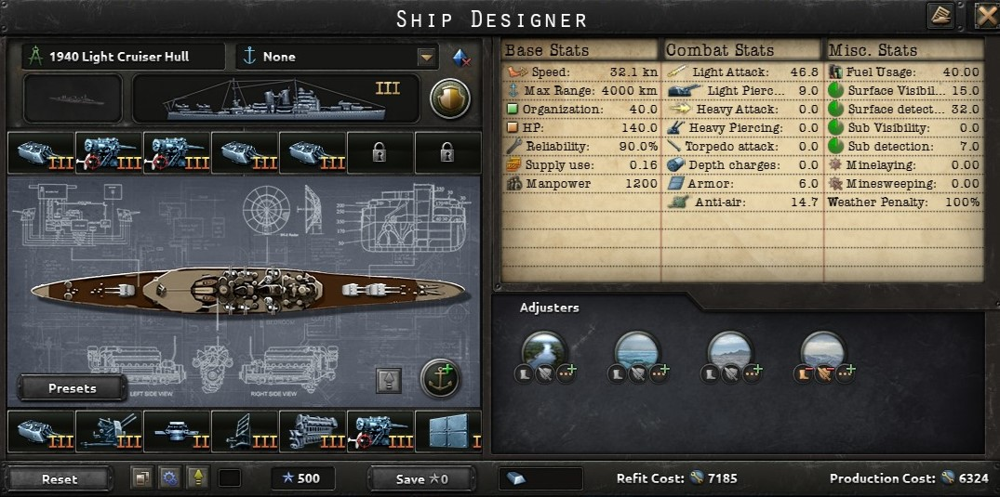
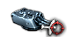

Cruiser Engine

A engine that is used to power cruisers.
- Cruiser Engine I:
- +20% max speed
- 12 fuel usage
- Cruiser Engine II:
- +30% max speed
- 16 fuel usage
- Cruiser Engine III:
- +35% max speed
- 20 fuel usage
- Cruiser Engine IV:
- +40% max speed
- 24 fuel usage
Cruiser Armor
Armor used on medium sized ships.
- Cruiser Armor I:
- -5% max speed
- 6 armor
- Cruiser Armor II:
- -7.5% max speed
- 6% hp
- 8 armor
- Cruiser Armor III:
<- -10% max speed
- 10% hp
- 8 armor
- Cruiser Armor IV:
- -12.5% max speed
- 15% hp
- 8 armor
Light Battery
A navy cannon put on lighter ships.
- Light Battery I:
- 1 light attack
- 1 light piercing
- -1% max speed
- Light Battery II:
- 1.5 light attack
- 2 light piercing
- -2% max speed
- Light Battery III:
- 2 light attack
- 2.5 light piercing
- -3% max speed
- Light Battery IV:
- 3 light attack
- 2.5 light piercing
- -4% max speed
Dual Purpose Main Battery
A navy cannon put on lighter ships that can also be used for anti-air roles.
- Dual-Purpose Main Battery I:
- 1 light attack
- 0.5 light piercing
- 1 anti-air
- -1% max speed
- Dual-Purpose Main Battery II:
- 1.5 light attack
- 1 light piercing
- 2 anti-air
- -2% max speed
- Dual-Purpose Main Battery III:
- 2 light attack
- 1.7 light piercing
- 3 anti-air
- -3% max speed
- Dual-Purpose Main Battery IV:
- 2.5 light attack
- 1.7 light piercing
- 4 anti-air
- -4% max speed
Light Cruiser Battery
A navy cannon put on light cruisers.
- Light Cruiser Battery I:
- 4 light attack
- 5.5 light piercing
- -3% max speed
- +20% hp
- Light Cruiser Battery II:
- 5 light attack
- 7 light piercing
- -4% max speed
- +20% hp
- Light Cruiser Battery III:
- 6 light attack
- 8 light piercing
- -5% max speed
- +20% hp
- Light Cruiser Battery IV:
- 7.5 light attack
- 9 light piercing
- -6% max speed
- +20% hp
Dual Purpose Light Cruiser Battery

A navy cannon put on light cruisers that can also be used for anti-air roles.
- 7.5 light attack
- 8 light piercing
- 4.5 anti-air
- -6% max speed
- +20% hp
Heavy Cruiser Battery
A navy cannon put on heavy cruisers for fighting heavier ships.
- Heavy Cruiser Battery I:
- 6 heavy attack
- 22 heavy piercing
- +40% hp
- -4% max speed
- Heavy Cruiser Battery II:
- 8 heavy attack
- 25 heavy piercing
- +40% hp
- -6% max speed
- Heavy Cruiser Battery III:
- 10 heavy attack
- 29 heavy piercing
- +40% hp
- -7% max speed
- Heavy Cruiser Battery IV:
- 12 heavy attack
- 34 heavy piercing
- +40% hp
- -8% max speed
Secondary Battery
A navy cannon put on cruisers and larger ships for tasks the main batterys aren't suited for.
- Secondary battery I
- 3 light attack
- 5.5 light piercing
- -2% max speed
- Secondary battery II
- 4 light attack
- 7 light piercing
- -3% max speed
Dual Purpose Secondary Battery
A navy cannon put on cruisers and larger ships for tasks the main batterys aren't suited for. Also can be used in a anti-air role.
- Dual-prupose secondary battery I
- 2 light attack
- 3 light piercing
- 1 anti-air
- -1% max speed
- Dual-prupose secondary battery II
- 3 light attack
- 4 light piercing
- 2 anti-air
- -1% max speed
- Dual-prupose secondary battery III
- 4 light attack
- 7 light piercing
- 2.5 anti-air
- -3% max speed
- Dual-prupose secondary battery IV
- 4.5 light attack
- 7 light piercing
- 3 anti-air
- -3% max speed
Anti-Air
Anti-Air guns meant to protect the ship from aircraft.
- Anti-Air I:
- 2.5 anti-air
- -0.5% max speed
- Anti-Air II:
- 3.5 anti-air
- -0.5% max speed
- Anti-Air III:
- 4.5 anti-air
- -0.5% max speed
- Anti-Air IV:
- 5.5 anti-air
- -0.5% max speed
Torpedo Launcher
Tubes that launch torpedoes at targets.
- Torpedo Launcher I
- 18 torpedo attack
- -1% max speed
- Torpedo Launcher II
- 24 torpedo attack
- +1% torpedo hit chance
- -2% max speed
- Torpedo Launcher I
- 30 torpedo attack
- +1.5% torpedo hit chance
- -3% max speed
- Torpedo Launcher I
- 36 torpedo attack
- +2% torpedo hit chance
- -4% max speed
Radar
Electronics used to detect objects from a long distance.
- Radar I
- 5 surface detection
- Radar II
- 7 surface detection
- 2 sub detection
- +2.5% light battery hit chance
- +2.5% heavy battery hit chance
- +5% anti-air
- Radar III
- 12 surface detection
- 6 sub detection
- +5% light battery hit chance
- +5% heavy battery hit chance
- +7.5% anti-air
- Radar IV
- 18 surface detection
- 14 sub detection
- +10% light battery hit chance
- +10% heavy battery hit chance
- +10% anti-air
Sonar
Electronics used to detect objects underwater.
- Sonar II
- 12 sub detection
Fire Control

Electronics meants to help ships fire more accurately.
- Fire control 0
- +2.5% light battery hit chance
- +2.5% heavy battery hit chance
- Fire cotnrol I
- +5% light battery hit chance
- +5% heavy battery hit chance
- +10% anti-air
- Fire cotnrol II
- +7.5% light battery hit chance
- +7.5% heavy battery hit chance
- +15% anti-air
- Fire cotnrol III
- +10% light battery hit chance
- +10% heavy battery hit chance
- +20% anti-air
Depth Charge
Explosives deployed to counter submarines.
- Depth charge I
- 8 depth charges
- -1% max speed
- Depth charge II
- 13 depth charges
- -1% max speed
- Depth charge III
- 17 depth charges
- -2% max speed
- Depth charge IV
- 22 depth charges
- -2% max speed
Minelaying gear
Equipment meant to deploy sea mines safely.
- Minelyaing Rails
- 1 minelaying
- -2% max speed
- Minelyaing Tubes
- 1 minelaying
Floatplane Catapult
Catapult meant to shoot floatplanes into the air.
- Floatplane Catapult
- 7 Surface Detection
- 2.5 Sub Detection
- -1% max speed
- Improved Floatplane Catapult
- 10 Surface Detection
- 3.5 Sub Detection
- -1% max speed